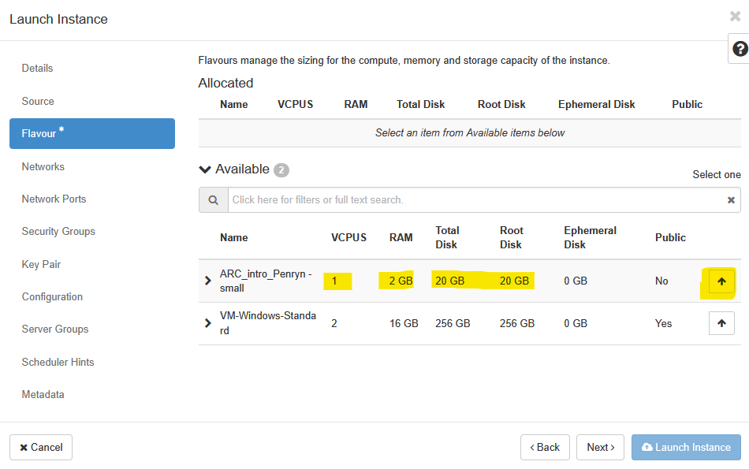
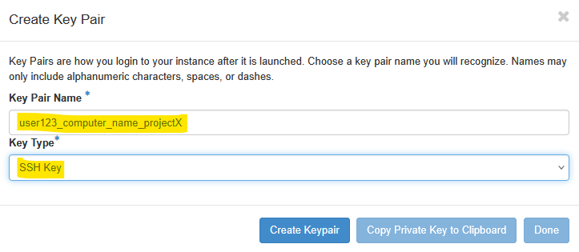
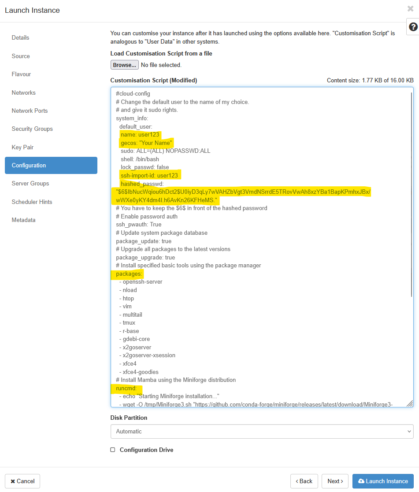
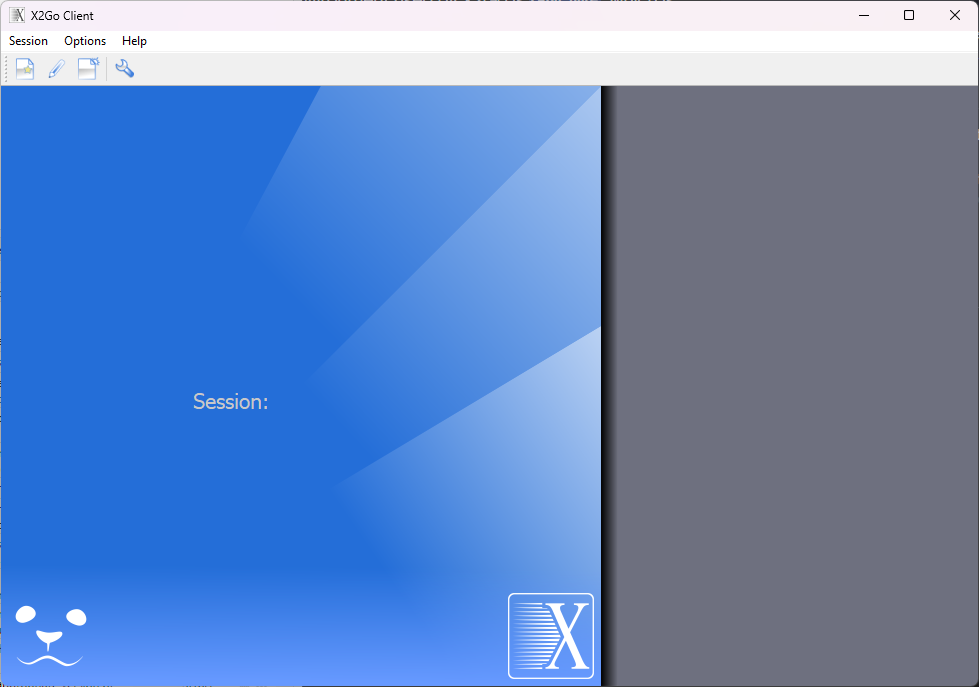
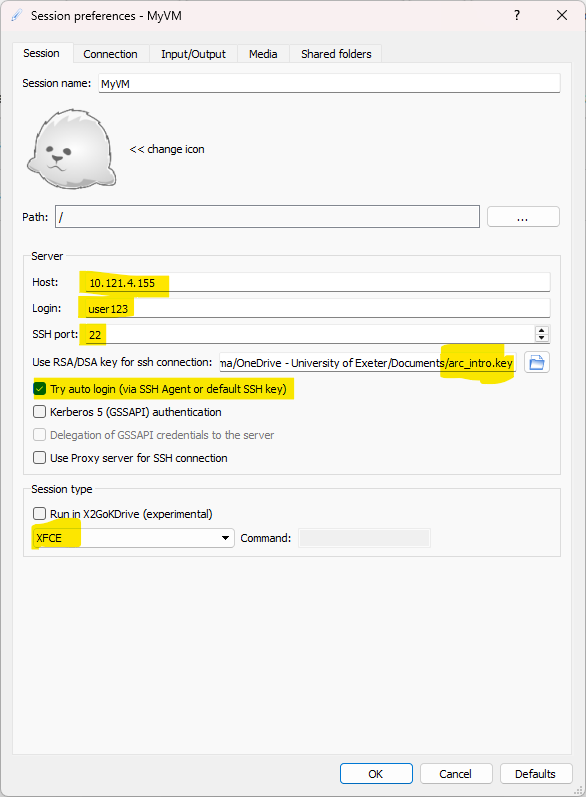
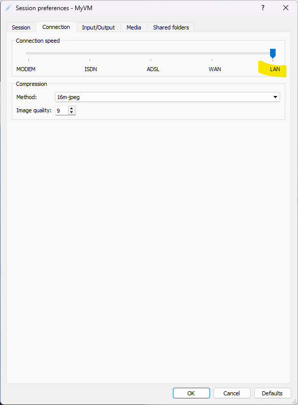
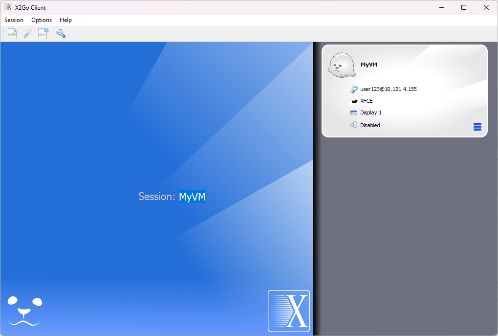

1 Learning objectives
By the end of this workshop you will be expected to:
- Know how to access the UoE OpenStack Console.
- Know how to configure and start your OpenStack Instance.
- Know how to connect to your OpenStack Instance from your own computer.
- Know how to manage your OpenStack Instances.
- Know how to make use of your Instance for specific use cases.
- Know where to ask for help and how to ask for help.
2 Outline
This course will give you an introduction into the Openstack Cloud Environment. OpenStack allows you to set up a private computer within the University’s Advanced Research Computing ecosystem. Click here to learn more about OpenStack. Several other courses in our series will use OpenStack and you may later use it for your own research.
We are going to introduce a lot of new concepts. Here is an overview of the 3 steps you need to start your course.
Openstack Console
First log onto the OpenStack console: https://stack.exeter.ac.uk Use the information in the OpenStack Console section of the provided document to log on. Follow the sections “Introduction” and “Tour of OpenStack Cloud” in the course material.
Create your training Instance.
Follow the sections “Create our Instance” in the course material. Use the information in the “OpenStack Image” section of the provided document.
Login to your instance.
The course notes explain 3 ways to connect to your instance (X2Go, PuTTy and MobaXterm). You only need to use one of these.
Managing your instanceHere are some instructions on how to stop and start your instances at the start of end of each session.
3 Introduction
For this workshop we will provide an overview of the internal OpenStack provision, part of the University of Exeter’s Advanced Research Computing facilities and see how, as researchers, we can use this flexible resource to get work done efficiently.
You should be able to access OpenStack and all of the functionality below via your own account to do your research. The aim of this workshop is to give you an introduction to OpenStack and Unix so you are ready to take full advantage of its capabilities!
Firstly some concepts and terminology might be confusing so here is some explanation of the advantages of using OpenStack.
3.1 Some Terminology
An Image: This is the starting point or template for the course. Think of it as a master copy of the computer which contains all the programs and data that are required to follow the course. We will use it as a template to start your own Instance.
An Instance: Almost the first thing you will do is create your own copy of the image - we call this an instance or a virtual machine. It contains everything that was in the image plus any files you create during the course.
A Volume This can be thought of as an additional hard disk which you can add or remove from an instance.
Remote Desktop We can’t plug a monitor and keyboard into a virtual machine (instance) so we need a program on our computer which connects to the instance allows us to see and control the instance from our desktop. In the course we will use a program called X2Go.
Command Line Client It is not really necessary to connect to an instance using remote desktop software. It is possible to connect only via a command line interfaces - you will not get any menus, icons images - you will only be able to type commands to tell the instance what you want to do.
3.2 Why Use Virtual Machines?
Instead of relying on dedicated physical hardware for every task, virtual machines (VMs) offer a highly flexible and efficient alternative. Imagine a scenario where you have a set number of powerful physical computers. Rather than assigning one computer to each user, VMs allow you to pool the resources of these physical machines and then divide them into multiple isolated virtual environments.
This approach offers significant advantages:
Optimal Resource Utilization: Physical machines often sit idle or are underutilized. VMs allow you to share resources like disk space, memory, and processors among many virtual instances. This means you can run more virtual machines than you have physical ones, making the most of your hardware. When a VM isn’t heavily used, its resources can be dynamically allocated to other, more active VMs.
Cost and Environmental Benefits: By maximizing hardware utilization, you can reduce the number of physical servers needed. This translates to lower initial purchasing costs, reduced energy consumption for operation and cooling, and a smaller physical footprint. This makes virtual machines a greener option in many cases, contributing to sustainability efforts.
The Power of Full Control
One of the most compelling reasons to use virtual machines is the full control you gain over your environment. Each virtual machine acts like an independent computer, allowing you to configure and customize it precisely to your needs.
Here’s how this translates into practical benefits:
Instant Provisioning and Customization: You can quickly launch new virtual machines with a wide variety of pre-configured machine images. These images can range from basic operating systems to specialized environments equipped with specific software for scientific modeling, data analysis, or development. This eliminates the need for lengthy manual installations and configurations.
Share and Collaborate with Ease: If you’ve developed a specific computational environment or analysis workflow, you can create and share your own VM images. This allows collaborators to instantly access and replicate your setup, ensuring consistency and simplifying the sharing of complex projects.
Dynamic Resource Scalability: Need more storage or processing power for a task? With VMs, you can often add storage on-the-fly by attaching virtual volumes, or increase processing power and RAM with just a few clicks. This agility means you can adapt your environment as your computational demands change, without the need for physical hardware upgrades or downtime.
Flexible Testing and Development: VMs are invaluable for researchers. You can easily create a machine to test the inner workings of the code you are developing before deploying them to larger, more complex systems. This isolated testing environment prevents conflicts and ensures smooth transitions.
Essentially, virtual machines empower you to create, modify, and manage your computational environment with unparalleled flexibility, giving you complete command over your digital workspace.
Let’s go to the next section and learn about the OpenStack Console.
4 Logging Into the Console
In addition to being extremely comprehensive, the Exeter OpenStack cloud has a relatively easy (but detailed!) interface for interacting with its offerings. All you have to do is log in via a web-browser and most of the functionality of the system is available for you and relatively easy to use.
To get started go to the following URL and login with your University of Exeter username (in the format of user123) the domain (exeter.ac.uk), and the password you use when logging onto your university resources.
We have set up a single workshop project which we will be using for training. Please do NOT abuse this project and do NOT put any personal, confidential or important data on the machines you will set-up during the training. You will all log in to the same management console and will be able to see machines which your friends and colleagues on the course will start.
https://stack.exeter.ac.uk/

This resource is only accessible within the University of Exeter network. So, if you are accessing this workshop from home or anywhere outside the campuses, you will need to connect to the University VPN service to be able to access the system. If using WiFi on campus, please use Eduroam or UoE_Secure only.
Once logged in, you will see a web-page that looks similar to this:
As a first step - let’s associate ourselves with the correct project. This is specially important for all users who may have access to multiple “projects” associated with their research groups. In this instance, please click on the Project dropdown and select ARC_Intro_Penryn - Workshop as your project. If done correctly, you should see a tick mark next to the selected project, as illustrated below.

We can now take a look at the various tabs. These include:
This is the list of virtual machines that have been created.
The service OpenStack is known for. It enables you to create Linux and Windows Virtual machines. Best of all their computational and/or disk capacity can be increased or decreased at the click of a button! This section has most of the things we need for this course.
A storage unit. These can be created and attached to any compute which you have running. Ideal for moving large amounts of data between machines. Think of it as a removable hard drive which you can attach to any machine.
These are the templates from which you create instances.
This is another type of storage, but is relatively slow. It is ideal for archive or when storing large files (i.e. several GB).However, it is currently disabled on the system. if you want to know more about it, please as your Research IT support team for assistance.
Click on “Compute” and then “Overview” at the top left.
On this page you’ll get a summary of the state for your account. You can see an example below.
Note that we are using a shared project where you’ll also see everyone else’s instances. If you were using your own project (or your research group’s project), you would only see your instances (or that of your research group).

You see here that we have a certain allocation of resources (memory, disk space, CPUs). We can choose how to allocate these to accomplish our scientific goals. For instance, we may need one very large machine with lots of resource to do a single task (e.g. a genome assembly). Or we may want lots of smaller machines, each doing a small task (e.g. a webserver and a database server). We may want half the machines running Unix and the other half running Windows. The point is, we are in control of the compute and can choose what suits us best and it can all be done, by us at the touch of a button.
In the example above, we have been allocated up-to 32 instances and a total of 32 cores with roughly 60GB of RAM so that each of the workshop attendees can spin up a virtual machine with 1vCPU and 2GB of RAM.
Click on “Compute” and then “Instances” at the top left. When this tutorial was created, there were no existing instances within the workshop project, so, those of you following this tutorial within the second workshop, will see a page with No items to display and anyone who sign in after a few instances have been created, would see a list of instances that pre-exist at that time.

Ok, so how do we actually do all this? Well, from this page we can create our own servers on Exeter’s OpenStack using an image of a machine the Research IT team have created earlier for you. Servers which are created in this manner are called ‘Instances’. We can create as many servers as we like, start them, log-in to them, do some work, transfer data to/from them or destroy them altogether. We let the Research IT team worry about the hardware, power, cooling and maintenance - all we need to do is specify how powerful a computer we want (tiny, small, medium, large or extra-large).
The reason we are using the OpenStack here is that many of you have to analyse large datasets. But you only need to cruch those datasets occasionally. In the case of high-throughput sequencing data (e.g. Illumina or Oxford Nanopore) you will find that your desktop PC may not be powerful enough to cope with the data. Also installing and configuring many pieces of software (often written by other scientists), is frequently painful as they often require other programs (also often written by other scientists) to be installed as well. Factor in some obscure incompatibility and you can quickly end up in a situation where two programs that you need refuse to co-exist. With OpenStack, you can just start a server instance based on an image created by someone else who has already done all the hard work of installation and configuration. You may also want to use an existing docker- or singularity- container within such an instance to carry out your workflow.
So let’s get on and launch our first instance!
5 Create your Instance
In this section of the workshop we will create our Instance in Exeter’s OpenStack system.
If you have an instance from a previous session do not create another one. Please go to the Managing Your OpenStack Instances and restart your existing instance.
Otherwise let’s get on and launch the instance we need for our workshop !
Click on the “Launch Instance” button.
Give your instance your name (e.g. “Jane Doe’s Instance”)
Remember that everyone is sharing the same project- so you will need to be identify your instance from everyone elses. The example above (“my_first_VM”) may be suitable for your own project, but it is not appropriate in a shared project.
Click ‘Next’ and proceed to choose the image of the machine you want to replicate. In this example, we will be using the Ubuntu 22.04 server image. Click on the highlighted arrow across from the “ubuntu_22.04” name and input a Volume Size of 20GB. Make sure to toggle the Delete Volume on Instance Delete option in this case.
When you are making your own VMs, within your own research project, you may choose to use different options based on your needs. Here, we have limited resources available for the workshop, so we need to make sure that everyone follows the instructions.
Click Next and select the desired flavour for this instance. Here, we would like you to select the ARC_Intro_Penryn - small flavour that will allow you to launch an instance with 1vCPU and 2GB of RAM. When you register your own project for access to OpenStack, you will see additional options for these flavours.

Security Groups
Click ‘Next’ to move on through Networks and Network Ports section and arrive at the Security Groups section. Here, click on the default security group to expand it, and to have a look at what has already been allowed through the firewall.

Here, we can see that SSH (port 22) has been allowed over the tcp protocol from anywhere (0.0.0.0/0). That is all we need to begin with, so we can go ahead and click Next.
If you are planning on using additional software that may need some ports to be opened up, then you can create your own security group with relevant ports allowed. For e.g. if you want to use VNC type software for remote desktop access to your instance, you will need to allow port 5901 etc. over tcp.
Our recipe for this workshop includes an installation of RStudio Server Open Source edition within the VM. We will show you how to edit the default security group to allow access to port 8787 for the RStudio Server later in the tutorial.
Key Pairs and Cloud Config
Setting up virtual machine (VM) instances in a cloud environment like OpenStack requires robust security measures and efficient configuration methods. This section details the critical steps involved in establishing secure access using SSH keypairs and automating initial VM setup with cloud-init, providing a foundational understanding for workshop participants.
Click ‘Next’ to move into the Key Pair section. OpenStack leverages SSH keypairs to secure VM instances at their launch time. When an instance is provisioned, OpenStack injects the user’s public key into the appropriate authorized_keys file on the new VM, making it ready for secure SSH access using the corresponding private key held by the user.
The private key, which is the secret component, must remain securely on the user’s local workstation and should never be uploaded to the cloud provider. This distinction is crucial for maintaining the integrity of the security model.
 A key pair allows you to SSH into your newly created instance. You may select an existing key pair, import a key pair, or generate a new key pair. Click on the Create Key Pair button highlighted above and then enter a Key Pair Name and Key Type in the pop-up box that appears next. Key Pairs are how you login to your instance after it is launched.
A key pair allows you to SSH into your newly created instance. You may select an existing key pair, import a key pair, or generate a new key pair. Click on the Create Key Pair button highlighted above and then enter a Key Pair Name and Key Type in the pop-up box that appears next. Key Pairs are how you login to your instance after it is launched.

Choose a key pair name you will recognize. Here we chose user123_computer_name_projectX to remind ourselves what the default username as and which VM this key is associated with. Names may only include alphanumeric characters, spaces, or dashes. Once the Key Pair is generated, you will need to copy the Private Key to your clipboard and save it in a safe space. Do not forget where you keep this key - you will not be able to login to the instance without this key pair if you have not enabled any other login mechanism.

Once copied, click Done. Open a text editor like Notepad++, Context or similar and save this SSH Key. The image below shows the successfully created Key Pair. On most browsers, the key pair will automatically get downloaded when you click done as well.

The choice of authentication method for remote access significantly impacts the security and operational efficiency of cloud environments. While password-based authentication is familiar, SSH keypair authentication offers substantial advantages, making it the preferred standard in cloud platforms like OpenStack.
Password authentication relies on a user remembering a secret string (the password) and providing it to the server for verification.
SSH keypair authentication provides a superior level of cryptographic strength that even extremely long, complex passwords cannot match. The public keys, generated using sophisticated mathematical algorithms, are virtually impossible to guess or brute-force, offering a robust defense against common attack vectors - as long as un-authorized users do not gain access to your private key.
Click Next to move on to the Configuration section.
Beyond establishing secure access, automating the initial configuration of virtual machines is crucial for efficiency, consistency, and scalability in cloud environments. Cloud-init serves as the industry-standard tool for this purpose.
When a new cloud instance is deployed, cloud-init takes initial configuration data, often referred to as “user-data” or “vendor-data,” and automatically applies these settings during the instance’s first boot process. This functions much like a dynamic to-do list that cloud-init executes, configuring the VM according to predefined instructions. The significant advantage of cloud-init lies in its ability to reuse these configuration instructions across numerous deployments, consistently producing reliable results.
Cloud-init is capable of handling a wide array of initial configuration tasks. These include essential activities such as setting the hostname, configuring network interfaces, creating and managing user accounts, installing necessary software packages, and executing custom scripts. This comprehensive automation streamlines the deployment process, ensuring that all cloud instances are configured uniformly, thereby minimizing the potential for human error.
Below are two minimal cloud-init script examples to configure essentials such as adding a local user account with ability to install research related applications (e.g. sudo apt install package-name). This will be all you really need for most use cases, but for additional configuration options, please refer to the cloud-init documentation.
We recommend that you use the Option 2 example for this workflow. Amend the settings as required to look as below (changing the ‘user123’, ‘Your Name’ and hashed_passwd lines):
Use this config if you only want key-pair authentication:
#cloud-config
# Use this config if you only want key-pair authentication.
# Change the default user to the name of my choice.
# and give it sudo rights.
system_info:
default_user:
name: user123
gecos: "Your Name"
groups: [sudo]
sudo: ALL=(ALL) NOPASSWD:ALL
shell: /bin/bash
# Update system package database
package_update: true
# Upgrade all packages to the latest versions
package_upgrade: true
# Install specified basic tools using the package manager
packages:
- openssh-server
- xubuntu-default-settings
- xubuntu-desktop
- xrdp
- nload
- htop
- vim
- multitail
- tmux
- r-base
- gdebi-core
- x2goserver
- x2goserver-xsession
- xfce4
- xfce4-goodies
# Install Mamba using the Miniforge distribution
runcmd:
- echo "Starting Miniforge installation..."
- wget -O /tmp/Miniforge3.sh "https://github.com/conda-forge/miniforge/releases/latest/download/Miniforge3-$(uname)-$(uname -m).sh"
- chmod +x /tmp/Miniforge3.sh
- /tmp/Miniforge3.sh -b -p /opt/miniforge3
- echo "Miniforge installation complete. Initializing conda for all users..."
- /opt/miniforge3/bin/conda init bash --system
- echo "Conda initialization for all users complete. Users may need to log out and back in."
- echo "Installing RStudio Server Open Source v2025.05.1+513 ..."
- wget -O /tmp/RStudio_Server.deb https://download2.rstudio.org/server/jammy/amd64/rstudio-server-2025.05.1-513-amd64.deb
- gdebi -n /tmp/RStudio_Server.deb
- echo "Enabling Lightdm and XRDP ..."
- systemctl enable --now lightdm
- systemctl enable --now xrdp
- systemctl set-default graphical.target
power_state:
delay: 0
mode: reboot
message: "Rebooting instance after cloud-init completion"
condition: TrueUse this config if you want password authentication (or password authentication alongside key pair auth as an alternative shown earlier)
#cloud-config
# Change the default user to the name of my choice.
# and give it sudo rights.
system_info:
default_user:
name: user123
gecos: "Your Name"
sudo: ALL=(ALL) NOPASSWD:ALL
shell: /bin/bash
lock_passwd: false
hashed_passwd: “$6$rTACxh6 ... <snip> ... xwWllho2N7nKq1nn1”
# You have to keep the $6$ in front of the hashed password
# Enable password auth
ssh_pwauth: True
# Update system package database
package_update: true
# Upgrade all packages to the latest versions
package_upgrade: true
# Install specified basic tools using the package manager
packages:
- openssh-server
- xubuntu-default-settings
- xubuntu-desktop
- xrdp
- nload
- htop
- vim
- multitail
- tmux
- r-base
- gdebi-core
- x2goserver
- x2goserver-xsession
- xfce4
- xfce4-goodies
# Install Mamba using the Miniforge distribution
runcmd:
- echo "Starting Miniforge installation..."
- wget -O /tmp/Miniforge3.sh "https://github.com/conda-forge/miniforge/releases/latest/download/Miniforge3-$(uname)-$(uname -m).sh"
- chmod +x /tmp/Miniforge3.sh
- /tmp/Miniforge3.sh -b -p /opt/miniforge3
- echo "Miniforge installation complete. Initializing conda for all users..."
- /opt/miniforge3/bin/conda init bash --system
- echo "Conda initialization for all users complete. Users may need to log out and back in."
- echo "Installing RStudio Server Open Source v2025.05.1+513 ..."
- wget -O /tmp/RStudio_Server.deb https://download2.rstudio.org/server/jammy/amd64/rstudio-server-2025.05.1-513-amd64.deb
- gdebi -n /tmp/RStudio_Server.deb
- echo "Enabling Lightdm and XRDP ..."
- systemctl enable --now lightdm
- systemctl enable --now xrdp
- systemctl set-default graphical.target
power_state:
delay: 0
mode: reboot
message: "Rebooting instance after cloud-init completion"
condition: TrueCopy paste the above script into a text editor like Notepad++, Context, Sublime etc. and edit the requisite sections such as name, gecos, hashed_password etc. as needed.
Note: The ‘hashed_passwd’ string is a crypt-sha512 hash (i.e., an encrypted version) of the password you will use to log in with (we advise not using your university password). Hashed passwords can be generated using a web page such as https://www.mkpasswd.net. You need to replace all of the ‘hashed_passwd’ field inside the double quotes with the hashed password you have generated.

Once you have your template ready, paste it into the Customisation Script section:

Click Next and skip over the Server Groups, Scheduler Hints and Metadata sections.

You have just configured an instance! Well done!
In summary, you have given your instance a name, chosen which source machine image to base the instance on, selected the size of the instance (i.e. amount of memory, disk space and processor power), configured the basic apps you wanted to pre-install on it and also configured how you can access it (key-pair vs username+password).
We’re ready to launch it! Click ‘Launch Instance’. At this point you wait for the instance to come online. This may take a few seconds for a small instance or about 10 minutes for an xx-large one.
Below you can see an example of an instance starting up (or spawning). It is running in the University data centre. Note that we don’t need to worry or think about the underlying hardware the system is running on. That’s all taken care of for us by OpenStack and the Research IT team.
Once it turns white and the ‘Status’ changes to ‘Active’, you should copy the IP address to the clipboard.

Note: above is an example where the IP address is 10.121.4.147 (yours will be different). We will need it in a moment to connect via X2Go remote desktop. Make sure you copy the whole address and nothing but the address.
Congratulations you have ‘configured’ and ‘turned on’ a new computer to use for the rest of this workshop.
Next, you will learn how to connect to it from your PC.
Before you proceed any further - let’s take a 20 minute break.
The cloud-init script would be working in the background to finish installing software and configuring your machine during that time.
6 Connecting to your Instance
Download and install X2Go alongside a tool like Putty, MobaXTerm or Termius on your computer.
The most commonly used, but basic program is PuTTy.
The one we recommend for Windows users is MobaXTerm - it provides all the important remote network tools (SSH, X11, RDP, VNC, FTP, MOSH, …) and Unix commands (bash, ls, cat, sed, grep, awk, rsync, …) to Windows desktop, in a single portable exe file which works out of the box.
Termius is another recommended SSH client that works on macOS, Windows, Linux, iOS and Andriod.
End-Users are responsible for ensuring that they comply with the license conditions for any of these software.
Check the IP address of your instance and copy it to your clipboard.
Command Line Connection
The simplest way you can connect to your instance is using SSH (secure shell). If you are happy using the command line only, there are some other software that have additional functionality, and look better. There are many choices - just Google ‘windows ssh client’ or ‘OSX SSH Client’
The most commonly used, but basic program is PuTTy. The one we recommend for Windows users is MobaXTerm - it provides all the important remote network tools (SSH, X11, RDP, VNC, FTP, MOSH, …) and Unix commands (bash, ls, cat, sed, grep, awk, rsync, …) to Windows desktop, in a single portable exe file which works out of the box.
Termius is another recommended SSH client that works on macOS, Windows, Linux, iOS and Andriod. Check out these detailed instructions on how to connect via SSH with an SSH Password or SSH Key.
We do not recommend using Git Bash for this. Git Bash is an application for Microsoft Windows environments which provides an emulation layer for a Git command line experience. It does not have all the functionality one would usually need when accessing servers in this manner.
If you are using a native terminal on MacOS or Unix, you could initiate a command line connection using:
ssh -i /path/to/your-private-key.key user123@<vm-ip-address>Console connection using the browser
Within your OpenStack web console, navigate to the instance list and click on your instance in the list. In this example, we will click on the keypair_only instance.
In the next window click on the Console tab. Here, you will be able to see the main GUI of your computer. If you used the cloud-init Option 2 - then you will be able to login at this interface using the password you had used. If you used Option 1 during the cloud-init stage, then you will not be able to login using this method as you would not be aware of the correct password to use. In this case, you would need to reset the user password (covered elsewhere) to be able to use the method described here.
Graphical connection using X2Go
For some modules you will need a full graphical desktop connection. This is a bit more complicated to set up, but will give you a full graphical desktop environment to work on. For this we use X2go
See here for detailed instructions on how to install X2Go client for your operating system. Note that you may need privilege escalation (a.k.a admin rights) on your machine to do this. If you have a University provided Windows laptop, you may also look for X2Go within the Company Portal for easy installation.
If you are on a University provided Mac running OSX, look for X2Go within the UoE Self Service app that has been pre-installed on your Mac device.
Once X2Go is installed, start the program from your desktop shortcut.
Or look for it in your start menu
When the programme launches for the first time, you may get a message as below, it only affects some features you don’t need.
N.B - on some versions of windows you might get a different message - select ‘Allow Access’ if you have administrative rights or else click ‘keep blocking’ or ‘cancel’.
You should now see the main screen

Now you need to tell your computer where to connect to. On a new installation the Session dialog (image below) will load automatically and you can start filling it up as shown below. On an existing installation of X2Go, you will need to Click on the ‘new session’ icon to set up a new connection.

Enter the information as highlighted above. Make sure you use the IP address you copied earlier and use an appropriate name. If you decide to use the Key Pair, then click the Try auto login checkbox as well. If not using a key Pair, you can omit those two fields.
Once this has been done we need to change the connection settings. If you are doing this on campus, you should select LAN here. If out of campus, please choose a connection speed based on your internet connection. Most modern fiber broadband services at home can be categorized as WAN.

Now let’s adjust the display settings so you can work comfortably at the correct screen resolution. Select the ‘Input/Output’ tab at the top and change the display to use the Use whole display as shown below. You may want to select Fullscreen instead.
In the Media tab, make sure that Enable sound support and Client side printer support are disabled (unless you need those options).
Once completed, click on OK. Your screen should now look like this:

Click anywhere in the white area. The first time you connect to your instance (or if the IP address changes after a reboot) you will see a message like:

Click Yes. If using a key-pair authentication, you will be connected automatically. If you have opted for password based authentication, then enter the password you chose when creating the crypt-sha512 hash.
7 Managing Your OpenStack Instances
This section contains some instructions on how to manage you OpenStack instances.
When you’re not working on the course please do be considerate and turn off your instance to avoid using unnecessary resource. If your instance is running, even if you are not doing anything on it, it will be using resource and may hinder others using the resources.
Find your instance:
Log onto the OpenStack console and find your instance. Click on Compute - Instances and if you cannot find your instance easily, use the filter button.
Stopping Your Instance:
If you wish to keep your data, use the Shut Off instance option. In this state the data written to disk will be preserved, but the instance will be ‘off’ (this is the equivalent of turning off a computer).
Use the dropdown next to your instance and select Shut Off Instance (near the bottom)
 You will be asked to confirm - double check it is the instance you intend to shut down.
You will be asked to confirm - double check it is the instance you intend to shut down.
Rebuilding Your Instance:
In OpenStack, rebuilding an instance means recreating it from a fresh image, effectively reinstalling the operating system and losing any data on the instance’s root disk. This process preserves the instance’s UUID, attached volumes, and network settings, such as fixed and floating IP addresses. It’s a way to “reset” an instance to a clean state without needing to delete and recreate it entirely.
Use the dropdown next to your instance and select Rebuild Instance (near the bottom)
You will then be asked to choose an image that you want to Rebuild from. Select the correct image for your needs and press Rebuild Instance.
Restarting Your Instance:
If the status of your instance is Shutoff - click Start Instance.
Double check the IP address of your instance as it may change - you will need to use the new IP address to connect to you instance. In X2Go click on the drop down arrow to get the menu of options.
Deleting an instance.
Note: this will destroy all work done to date.
When you’re completely finished with the workshop, click the drop-down menu next to your instance and select Delete Instance. It will ask you to confirm - You can then watch the status change from Shutting down to Deleted.
8 Specific Use Cases
Here, we have configured a virtual machine that has an installation of RStudio Server (Open Source Edition) and it also has XRDP (a remote desktop for Ubuntu) installed on it. In this section, we will show you how to modify your Security Groups to allow access to these applications from your laptop.
Go to the Network tab and then to the Security Groups pane within it. Click on Manage Rules on the far right-hand side.
Click on Add Rule to create the new rules we need.
8.1 Allowing access to RStudio Server
RStudio Server listens on tcp port 8787 by default and XRDP listens on tcp port 3389. First, let’s add a custom rule for RStudio as follows:
Now, you can access your RStudio Server’s web interface at http://10.121.4.162:8787/ (substitute the IP address shown here with your own VM’s IP address).
Note that the RStudio Server interface requires you to use a username and password combination. So, this example will only work if you chose Option 2 in the Cloud Config section.
8.2 Allowing access to Remote Desktop Protocol
Now, we can add another rule for RDP. This is a well known service so we can select RDP from the drop down options and click Add.
Now, if you launch your OS specific Remote Desktop Client and configure it to connect to your VM as follows:
Press connect, and when prompted with a warning that the identity of the remote computer cannot be verified, click yes to connect anyway.
You will no see a remote desktop screen where you can proceed to enter the password you had used to create this Instance.
After a brief wait, you will see the XUbuntu-Desktop in front of you. You may now proceed to interact with the Instance just like you would with a computer in front of you. When doing this for the first time, you may be presented with authentication / elevation messages (as shown below), or shown options to upgrade the operating system to the next distribution - address those prompts with care.
If you don’t know what it is, ask Google and then consider accessing the Ask For Help Teams channel to ask for help!
Now, if you go back and look at the modified rules - they should look something like this:
8.3 Using VSCode to interact with this Instance
First, follow this guide to setup VS Code for your platform. Once VS Code is installed, you can use the Visual Studio Code Remote - SSH extension to open a remote folder on any remote machine, virtual machine, or container with a running SSH server and take full advantage of VS Code’s feature set. Once connected to a server, you can interact with files and folders anywhere on the remote filesystem. See this guide to learn how to connect to this instance over SSH.
9 Acknowledgements
The inaugural set of workshops has been funded by a Researcher Led Initiative grant to Dr. Tom Horton, in collaboration with Dr. M.D. Sharma and Dr. Stephen Lang at the University of Exeter (Penryn Campus).